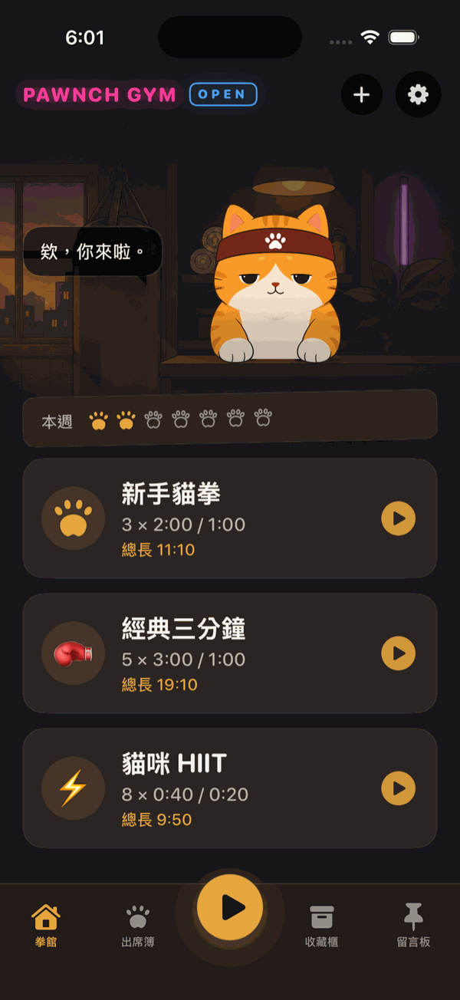
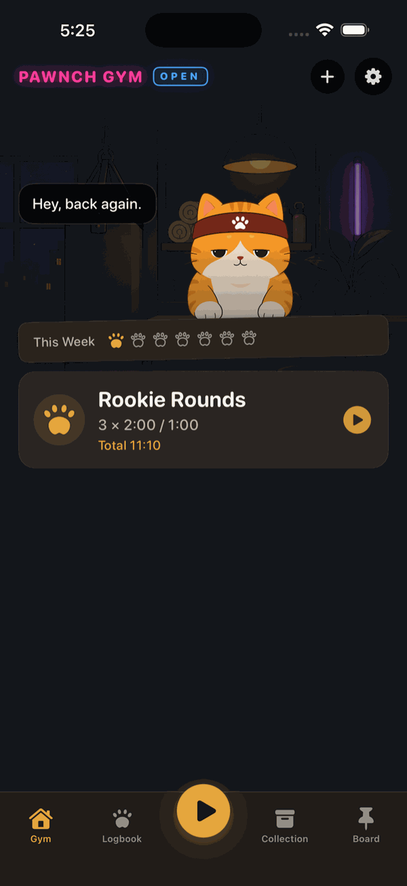
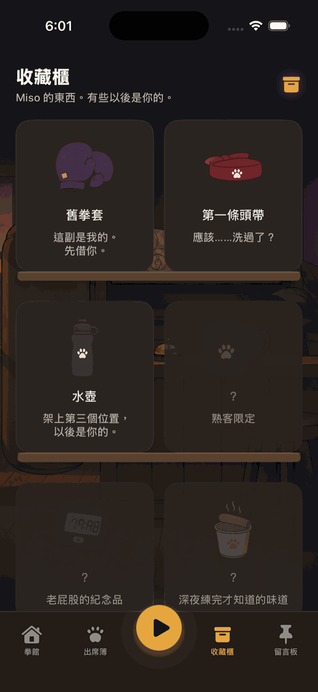
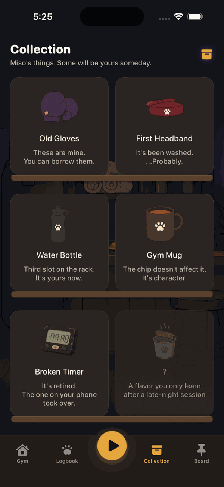

Pawnch 是一個拳擊間歇計時器 app。貓咪館長 Miso 顧櫃檯，不會撲上來推課，不喊口號，只記得你有沒有來，也不會因為你沒來就唸你。 Pawnch is a boxing interval timer app. Miso, the gym cat, mans the front desk — no pouncing to upsell you, no hype, just quietly keeping track of whether you showed up — and won't lecture you if you didn't.
iPhone only · iOS 17+ · 無帳號 · 無追蹤 iPhone only · iOS 17+ · No account · No tracking


沒有等級、沒有排行榜、沒有連續天數。就是一間你可以隨時進來打幾拳的地方。 No levels, no leaderboards, no streaks to break. Just a place you can walk into any time and throw a few punches.
自訂回合數、時間、休息長度。準備、出拳、休息、收操——聲音跟震動會提醒你，不用一直盯螢幕。 Set your own rounds, durations, and rest length. Get ready, throw punches, rest, cool down — sound and vibration cue every phase, so you never have to stare at the screen.
每次練完蓋一枚出席章。不是連續打卡壓力，只是老實記錄你這個月來了幾個晚上。 Every session stamps your attendance log. No streak pressure — just an honest record of how many nights you showed up this month.
撲克臉、半睡半醒、講話不多。深夜來，他說「這個時間只剩我們了」；太久沒來，他說「我還以為你搬家了」。 Poker-faced, half-asleep, a cat of few words. Show up late and it's "This hour, it's just us." Been away a while and it's "I thought you moved away."
常來會慢慢解鎖拳館裡的舊物件；留言板是 Miso 隨手貼的紙條，有空再翻。 Keep coming back and you'll slowly unlock old gym relics. The message board is just notes Miso leaves lying around — flip through when you feel like it.
有人請我吃罐罐。我多打了兩回合。好啦，一回合。
Someone got me treats. I did two extra rounds. Fine, one.
半夜有貓經過。
聊了一下。
A cat passed by around midnight.
We talked for a bit.
你這樣下去會比我強。
算了，本來就比我強。
Keep this up and you'll be stronger than me.
Okay, you already are.
深色拳館主題，深夜躺著看螢幕也不刺眼。 A dark gym theme, easy on the eyes for late-night sessions.


這是一個工具 app，不是要留住你的產品。以下是它實際上會（不會）做的事。 This is a tool, not a product designed to hook you. Here's exactly what it does — and doesn't do.
App 有問題、有建議，或單純想告訴我們 Miso 講了什麼好笑的話，都歡迎寫信來。 Got a bug, a suggestion, or just want to tell us the funniest thing Miso said — drop us a line.